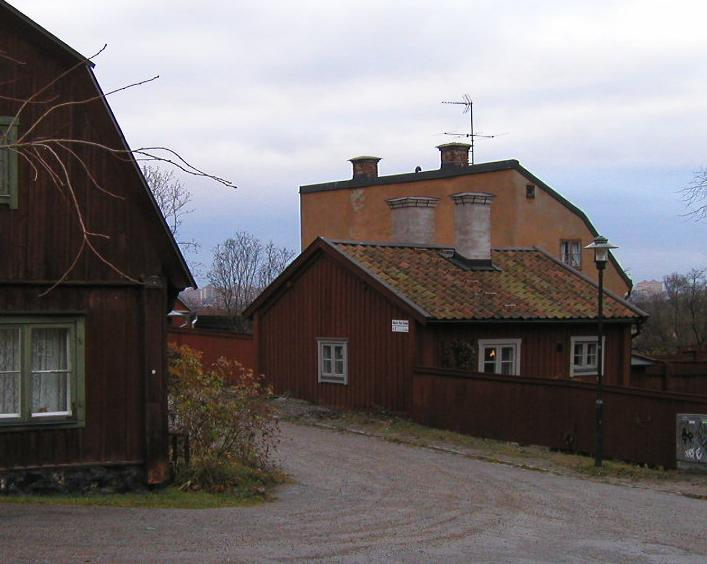
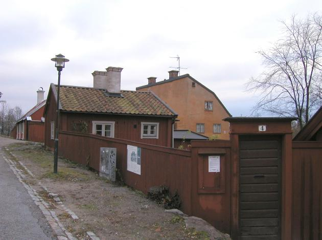
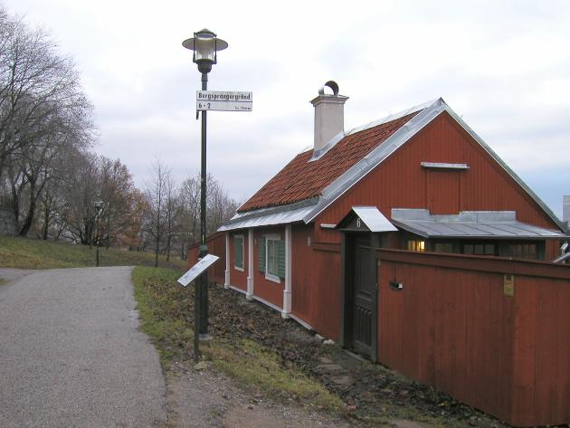
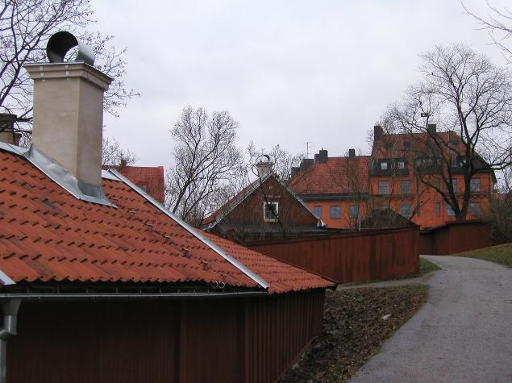
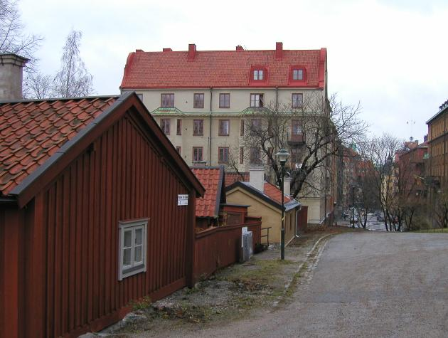
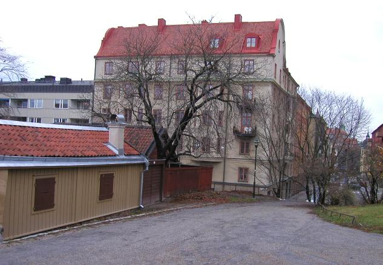

Södermalm i tid och rum

Mäster Pers gränd 4 från NO.

Mäster Pers gränd 4-6 från norr.

Mäster Pers gränd 6 från norr.

Mäster Pers gränd 8-6 från söder.

Mäster Pers gränd 4-2 från söder.

Mäster Pers gränd 2 från söder mot Borgmästargatan.